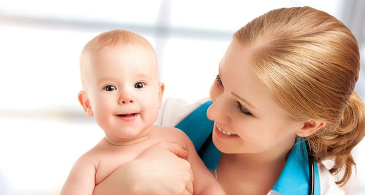
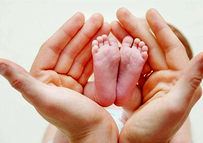
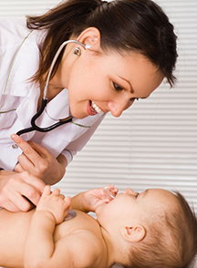

新生儿如何护理

新生儿如何护理 ？
2017.10.22
2865评论
................................................................................................
新生儿护理的基本知识
新生婴儿喂养，以母乳最佳，越早喂养越好。在婴儿出生半小时内，如果妈妈的乳房中还未分泌出乳汁，也需让婴儿吮吸乳头，以促进乳汁分泌。同时，母乳喂养也可增进孩子和母亲之间的感情。
新生儿的皮肤娇嫩，衣服和尿布都应该采用吸水性能好的纯棉衣物。其次，衣服颜色应选淡色系，既防止婴儿因漂染色素感染，也方便父母及时发现衣物上的脏污，为婴儿保持清洁。婴儿头发稀疏，头部散热快，头部也就容易着凉，气候寒冷或在室外有风吹的情况下，最好给婴儿戴上小帽。


新生儿护理的禁忌
新生儿出生后要马上用柔软干净的温暖毛巾擦干身体，并用干净毛毯裹住。室内温度保持在23度以上，宝宝的体温也要保持在36度到37度之间，如果低于36度或超过38度要及时查找原因。出生后的第一天，每隔4个钟头量一次体温，确保体温正常。若宝宝体温稳定，可将间隔时间拉长到6—12个小时。
新生儿出生后要马上用柔软干净的温暖毛巾擦干身体，并用干净毛毯裹住。室内温度保持在23度以上，宝宝的体温也要保持在36度到37度之间，如果低于36度或超过38度要及时查找原因。出生后的第一天，每隔4个钟头量一次体温，确保体温正常。若宝宝体温稳定，可将间隔时间拉长到6—12个小时。
宝宝出生时，口腔处、咽喉部位都会有粘液和羊水，家长一定要注意及时帮宝宝将这些液体清除掉。如果宝宝误吸这些液体，可能会导致吸入性肺炎。
一键分享 /
任雅丽
"呵护每一个宝宝的健康"